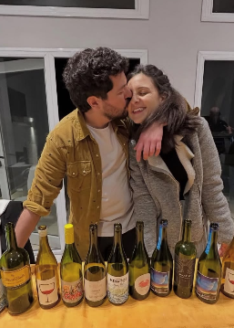
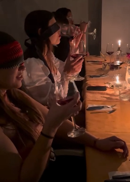
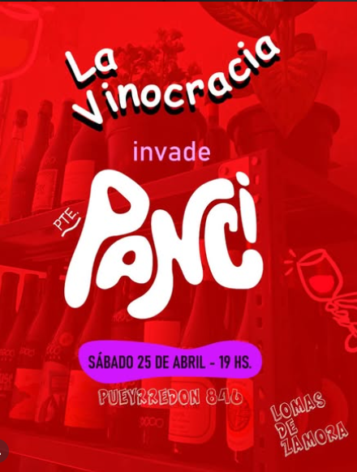
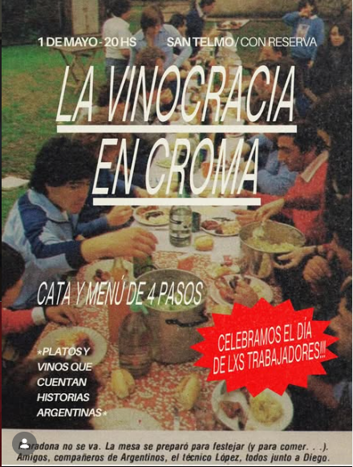

La Vinocracia
Compartimos el vino y el alimento a través de lugares, culturas y personas.
Compartimos el vino y el alimento a través de lugares, culturas y personas.

Somos Maru y Gasti, hace mucho tiempo nos acompañamos en la vida y ahora decidimos acompañarlxs a ustedes a conocer proyectos, personas y lugares que nos convocan. Queremos que sea desde un lugar cercano, consciente y sobre todo honesto. Bienvenidxs!


Nos movemos para copar el espacio de Pte. Panza con lo mejor de nuestros vinos seleccionados.

Celebramos el día de lxs trabajadores con platos y vinos que cuentan historias argentinas. Misa y banquete asegurado.

Una experiencia de cocina errante junto a Latitud Sur que atraviesa fronteras culinarias en un espacio íntimo.
Espacios, colectivos y proyectos hermanos con los que compartimos fuegos, barricadas culturales y copas llenas.
Bar de vinos ubicado en Banfield, Zona Sur de Buenos Aires, dirigido por nuestro amigo y sommelier Santi Squillace.
@panci.barCocina itinerante liderada por Majo Barrera, amiga y chef internacional que transmite la cultura latinoamericana a través de sus platos.
@latitudsur26Cenas a puertas cerradas en San Telmo lideradas por 3 amigxs que comparten la pasión por la cocina y por aprender cosas nuevas.
@es.cromaYoga, Pilates y Reiki itinerante dirigido por Martu Sánchez Si necesitas tomarte una pausa y dejarte guiar por una persona que transmite paz, ¡ella es la indicada!
@refugio.emocional